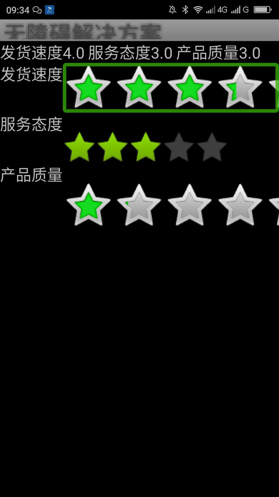

用AccessibilityNodeInfo.RangeInfo使星级评分条（RatingBar）改变值的时候有声音提示____20160525
【问题描述】
Android标准控件的星级评分条（RatingBar）在值改变的时候没有任何提示，用户无法知道当前修改值到什么星级了。
【问题解决方案描述】
利用setAccessibilityDelegate方法给星级评分条(RatingBar)设置AccessibilityDelegate并在此类中重写onInitializeAccessibilityNodeINfo()方法，在onInitializeAccessibilityNodeiNfo()方法中利用AccessibilityNodeINfo.RangeInfo类给添加进度提示。用此方法添加进度提示之后星级评分条的值在改变的时候会发出声音提示，选择的星级越高提示的声音就月高（TalkBack下测试）。
注:
- SetAccessibilityDelegate()和View.AccessibilityDelegate要Android api14才支持。可以用支持库v4中的AccessibilityDelegateCompat类和setAccessibilityDelegateCompat()方法支持到Android api4。
- AccessibilityNodeInfo.RangeInfo类要Android api19才支持，但是可以用支持库v4中的AccessibilityNodeInfoCompat.RangeInfoCompat类支持Android api4。
【前后效果图对比】
|  | |
| 优化前，聚焦评分条，双指左右拖动，没有音效提示； | 优化前，聚焦评分条，双指左右拖动，有音效提示； |